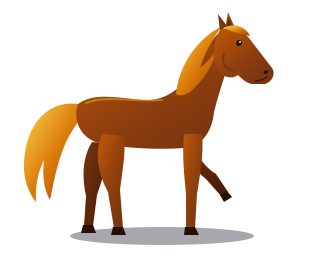

Estudante de Desenvolvimento Web
Olá, eu sou Gabriel.
Estou aprendendo a criar páginas web com HTML e CSS. Este portfólio reúne meus estudos, projetos e próximos passos na tecnologia.
Conheça meus projetos

Um pouco da minha trajetória
Sou estudante e estou desenvolvendo minha base em criação de sites. Tenho interesse em transformar ideias em páginas claras, acessíveis e agradáveis de usar. Meu objetivo é continuar praticando e evoluindo em desenvolvimento front-end.
O que venho criando

Projeto de estudo
Página educativa sobre orcas, feita para praticar estruturação de conteúdo, navegação e estilos visuais com HTML e CSS.
Ver demonstraçãoO repositório público deste projeto ainda não foi informado.
Ferramentas e competências
Estruturação semântica de páginas e organização de conteúdo.
Estilização, cores, tipografia, espaçamento e efeitos visuais.
Alinhamento e distribuição de elementos em layouts de página.
Curiosidade, prática e vontade de melhorar a cada projeto.
Vamos nos conectar
Encontre meus perfis profissionais:
Troque os endereços acima pelos links dos seus perfis pessoais.